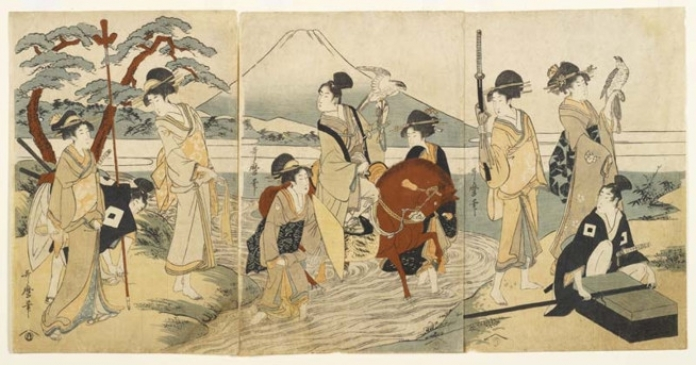
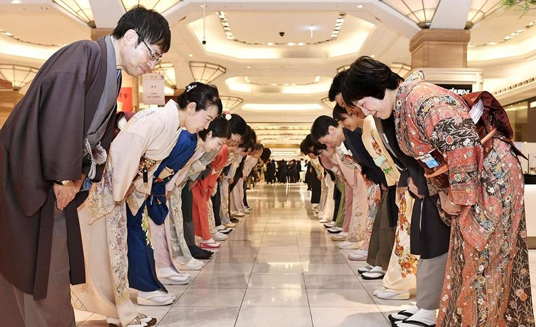
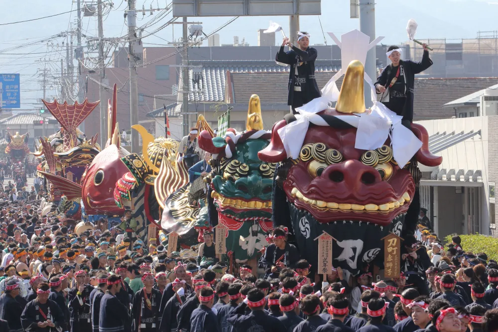
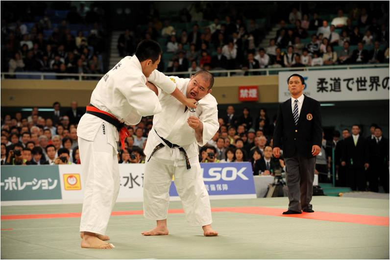
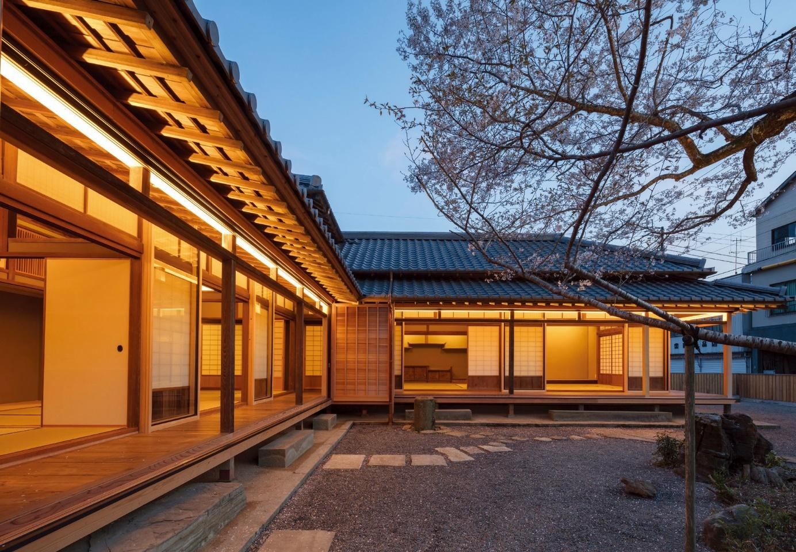

Conheça um pouco sobre a cultura do Japão
História do Japão
O Japão é uma nação insular no Leste Asiático com uma rica história que remonta a milhares de anos. Ao longo dos séculos, o Japão desenvolveu uma civilização única, influenciada por China, Coreia e pelo Ocidente, mas mantendo sua própria identidade.
O período feudal japonês foi marcado por samurais, senhores da guerra chamados de daimyo e o xogunato, um governo militar. O país passou por um longo período de isolamento até sua reabertura ao Ocidente no século XIX, que levou a uma rápida modernização e ao seu crescimento como potência mundial.
Costumes Japoneses
Os costumes japoneses são enraizados em um forte senso de respeito, tradição e harmonia. Entre os costumes mais notáveis estão:
- Saudações: O ato de se curvar (ou ojigi) é uma maneira importante de demonstrar respeito.
- Rituais do chá: A cerimônia do chá é uma prática tradicional de preparação e consumo do chá, envolvendo precisão e respeito pelos convidados.
- Respeito pela natureza: Os japoneses têm uma profunda reverência pela natureza, o que é evidente em festivais como o Hanami, a celebração das flores de cerejeira.
Festivais Japoneses
O Japão celebra diversos festivais ao longo do ano, muitos deles ligados às estações do ano ou a eventos históricos. Alguns dos mais famosos são:
- Hanami: Festival da flor de cerejeira, onde as pessoas se reúnem para admirar as flores (sakura) que florescem na primavera.
- Tanabata: Festival das Estrelas, onde as pessoas escrevem desejos em pedaços de papel e os penduram em ramos de bambu.
- Gion Matsuri: Um dos maiores festivais do Japão, realizado em Kyoto, que inclui desfiles e cerimônias religiosas.
Artes Marciais Japonesas
O Japão é o berço de várias artes marciais que se concentraram tanto na autodefesa quanto no desenvolvimento espiritual e disciplinar. Algumas das mais conhecidas incluem:
- Judo: Focado em técnicas de projeção e imobilização, é uma das artes marciais mais populares do Japão.
- Kendo: Uma forma de esgrima japonesa que utiliza espadas de bambu.
- Karate: Um estilo de combate que se baseia em golpes de punho, chutes e defesa pessoal.
- Aikido: Uma arte marcial defensiva que enfatiza a harmonização com o oponente e o uso de sua própria força contra ele.
Arquitetura Tradicional Japonesa
A arquitetura japonesa é famosa por sua harmonia com a natureza, simplicidade e elegância. Algumas das características notáveis incluem:
- Templos e Santuários: Estruturas tradicionais como os templos budistas e os santuários xintoístas possuem design detalhado, como telhados inclinados e jardins zen.
- Casas de Madeira: As casas tradicionais japonesas, conhecidas como minka, são feitas de madeira e papel, com pisos de tatame e portas deslizantes (shoji).
- Castelos: Durante o período feudal, o Japão era repleto de castelos imponentes, como o Castelo de Himeji, que simboliza poder e resistência.